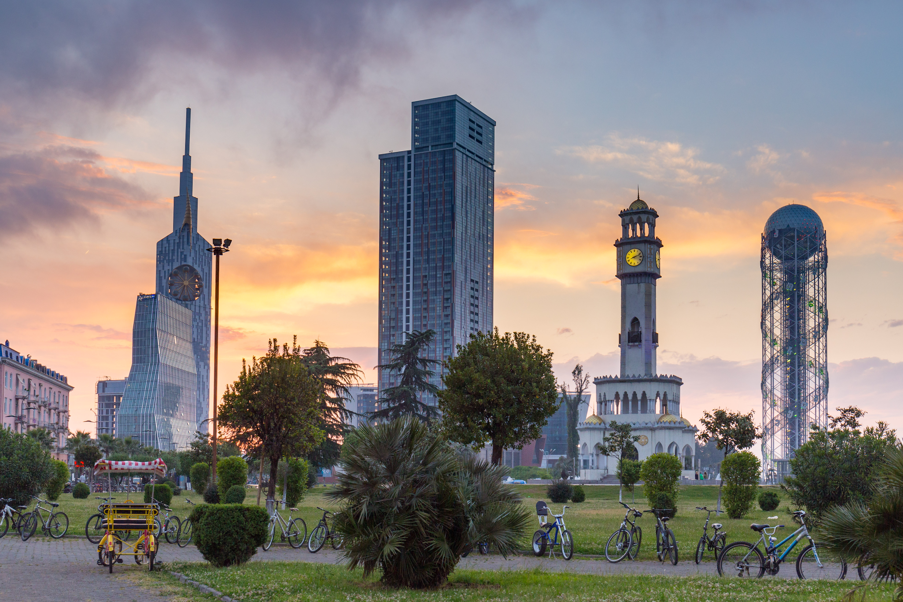

Тбилиси
Тбилиси - столица и
культурный центр Грузии, город с богатой историей и
невероятным очарованием. Его название происходит от грузинского слова "tbili",
что означает "теплый", что идеально подходит для этого солнечного и гостеприимного
места. В самом сердце города раскинулся Старый Тбилиси, с его узкими улочками,
каменными церквями и старинными домами с деревянными балконами, создающими уникальную
атмосферу.
Грузия славится своей кухней, и Тбилиси - истинный рай для
гурманов. Здесь можно отведать ароматные хачапури, сочные мясные блюда, такие как
шашлык и чахохбили, а также насладиться богатством винодельческой культуры, вкусив
лучшие сорта грузинского вина.
Город также славится своими историческими
достопримечательностями, включая Нарикала - древнюю крепость, которая возвышается
над городом, и Цминда Самеба - Собор Воскрешения, который поражает своей архитектурой
и мощным духовным воздействием.
Тбилиси - это также место, где сходятся
разные культуры и традиции. Здесь вы найдете многочисленные музеи, галереи и
театры, а также места для ночных развлечений, которые живут до утра.
С его красивой природой, богатой историей и гостеприимством местных жителей,
Тбилиси - незабываемое место, которое оставит непередаваемые впечатления у каждого,
кто его посетит.
{kind=link}
Батуми
Батуми - живописный город региона Аджария расположенный на побережье Черного моря, в Аджарии, Грузия. Этот город обладает своим неповторимым характером и атмосферой, которые делают его уникальным местом для путешествия. Одной из главных особенностей Батуми является его морской берег, с песчаными пляжами и набережными, которые приглашают отдохнуть и насладиться морским бризом.

Город также славится своими курортами и казино, что делает его
популярным местом для развлечений. Батуми обладает уникальной
архитектурой, смешивающей современные небоскребы с архитектурными
шедеврами из старых времен.
Гастрономическое наследие Батуми также
богато и разнообразно. В городе можно отведать блюда аджарской кухни,
включая хачапури по-аджарски, который представляет собой хрустящее
тесто с сыром и яйцом. Помимо этого, Батуми предлагает множество
развлечений, включая парки развлечений, аквапарки и живописные
ботанические сады. Город также известен своей ночной жизнью, с
множеством клубов, баров и ресторанов, где можно провести весело
время до рассвета.
Батуми - это место, где можно насладиться морем,
культурой и развлечениями, и оно оставит незабываемые впечатления у
каждого, кто решит его посетить.
Кутаиси
Кутаиси - один из древнейших и культурно насыщенных городов Грузии, который расположен в живописной долине на реке Риони. Этот город важен не только с исторической точки зрения, но и является важным культурным и экономическим центром региона.

Одной из самых выдающихся достопримечательностей Кутаиси является Гелатский
монастырь, который внесен в список Всемирного наследия ЮНЕСКО. Этот древний
монастырь, основанный в 12 веке, поражает своей архитектурной красотой
и историческим значением. Город также славится своими ботаническими садами,
в том числе Ботаническим садом имени Николоза Бараташвили, где
можно насладиться разнообразием растений и красивыми пейзажами.
Кутаиси - это также место, где можно погрузиться в культурное наследие
Грузии. Здесь находится Государственный музей Грузии, в котором хранятся
ценные артефакты и экспонаты, рассказывающие о богатой истории этой страны.
Кутаиси - это город, в котором сливаются воедино история, культура
и природа. С его уникальными достопримечательностями и теплым грузинским
гостеприимством он оставляет незабываемые впечатления у всех, кто приезжает сюда.